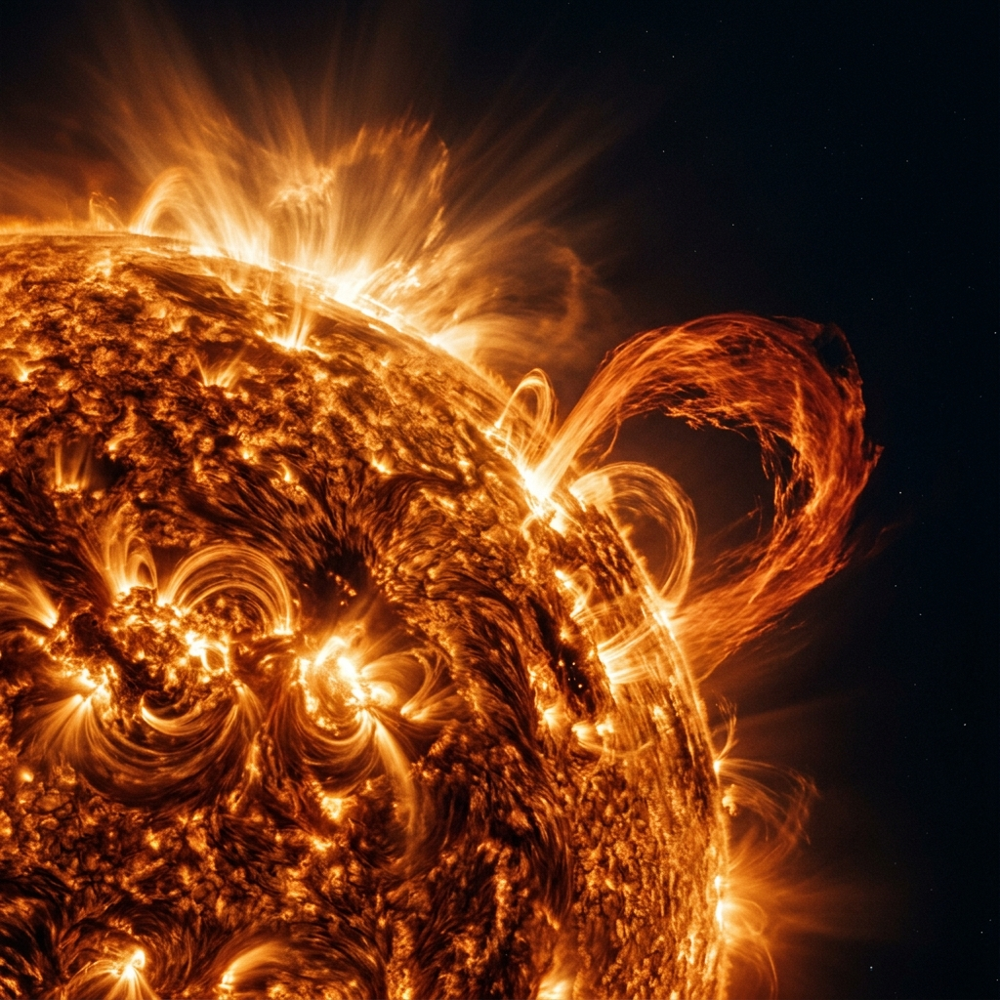
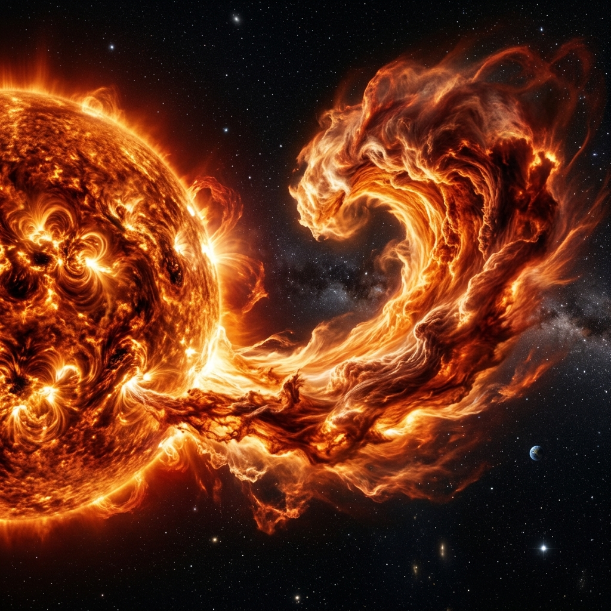

Explore the dynamic plasma environment at the Sun-Earth L1 point with real-time data from Aditya-L1's in-situ instruments.
Stationed at the first Lagrange point (L1), Aditya-L1 maintains a gravitational balance between the Earth and the Sun. From this vantage point, 1.5 million kilometres away, the spacecraft has an uninterrupted view of the Sun, free from eclipses or occultation.
Current space weather environment at the L1 Point derived from Level-2 telemetry.

The Sun's outer atmosphere, or corona, is a region of million-degree plasma that extends millions of kilometres into space. It is here that the solar wind is born and accelerated to supersonic speeds.
The Aditya Solar wind Particle Experiment consists of two sensors: SWIS (Solar Wind Ion Spectrometer) for low-energy ions and STEPS (Supra-Thermal and Energetic Particle Spectrometer) for high-energy populations.
The Tri-axial High Resolution Digital Magnetometer measures the IMF, while PAPA (Plasma Analyser Package for Aditya) analyzes the composition and distribution of solar wind plasma.
Inquire about coronal mass ejections, solar flares, or L1 physics.